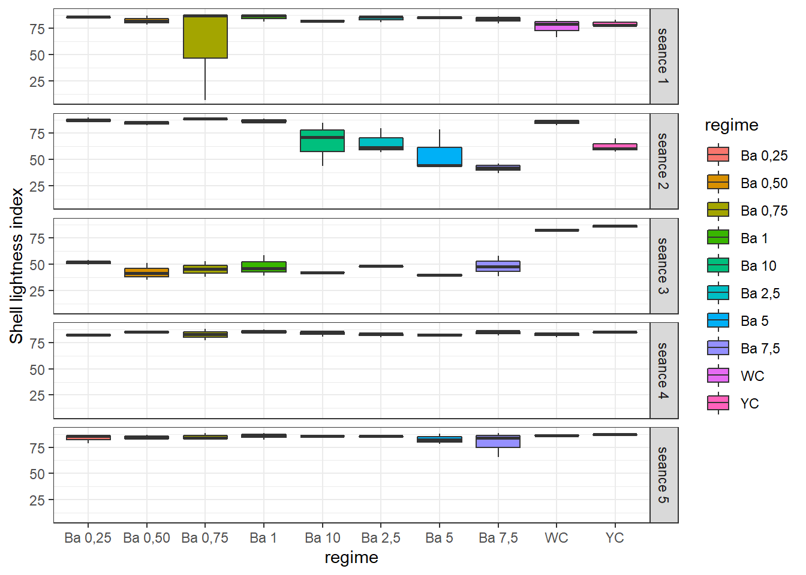
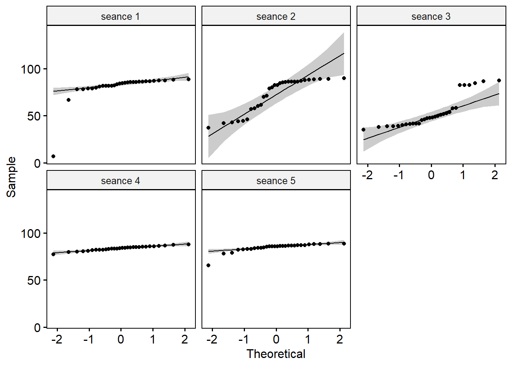
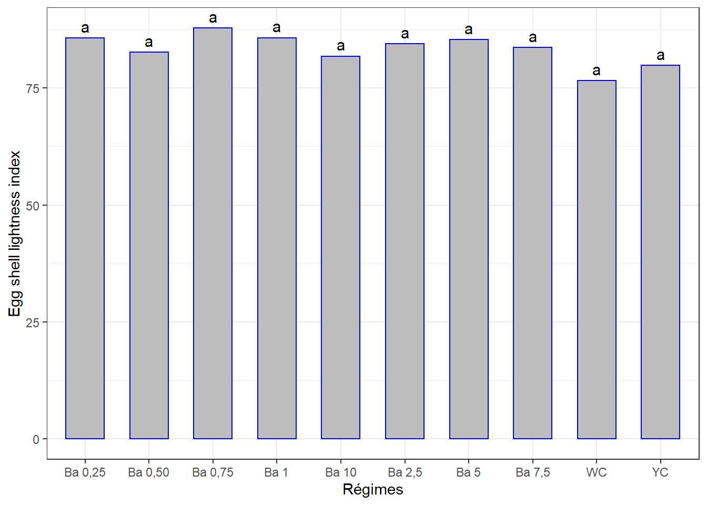
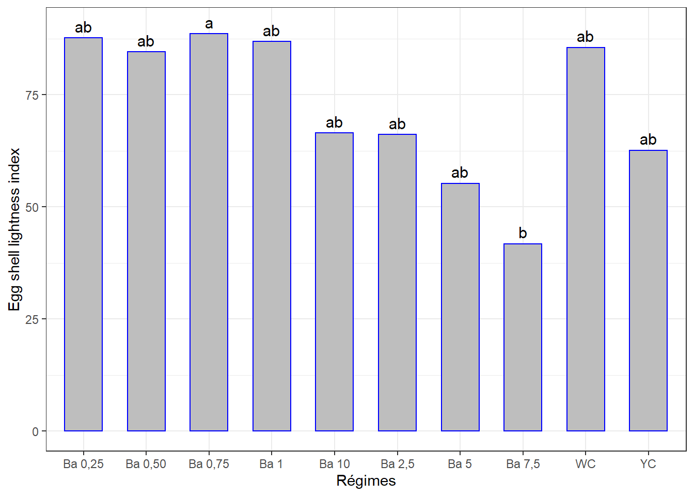
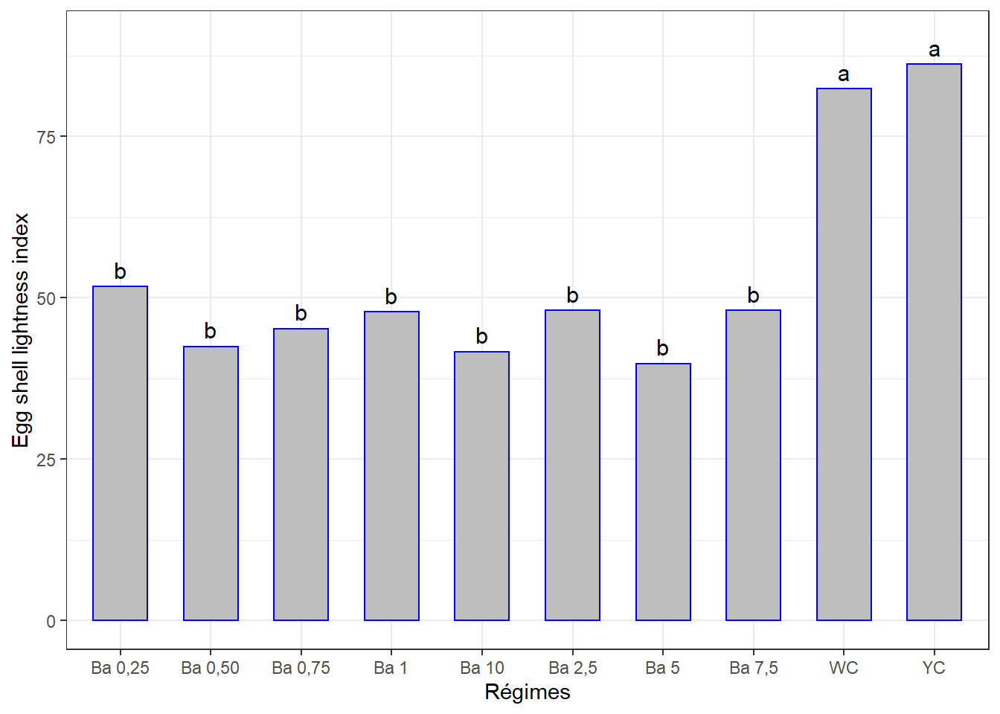
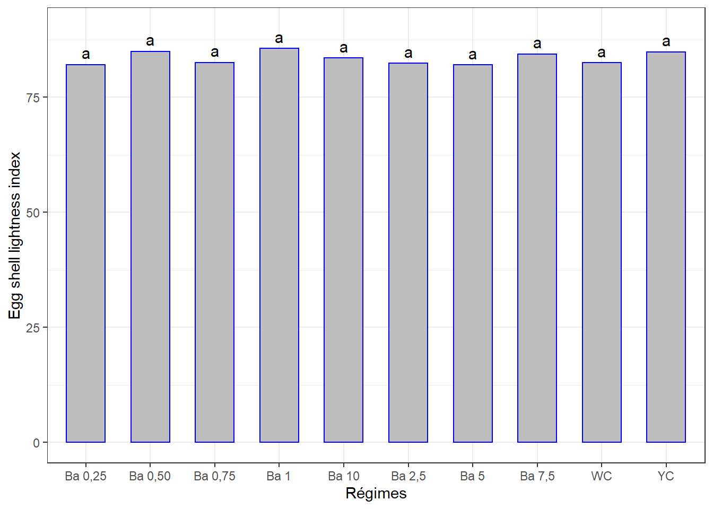
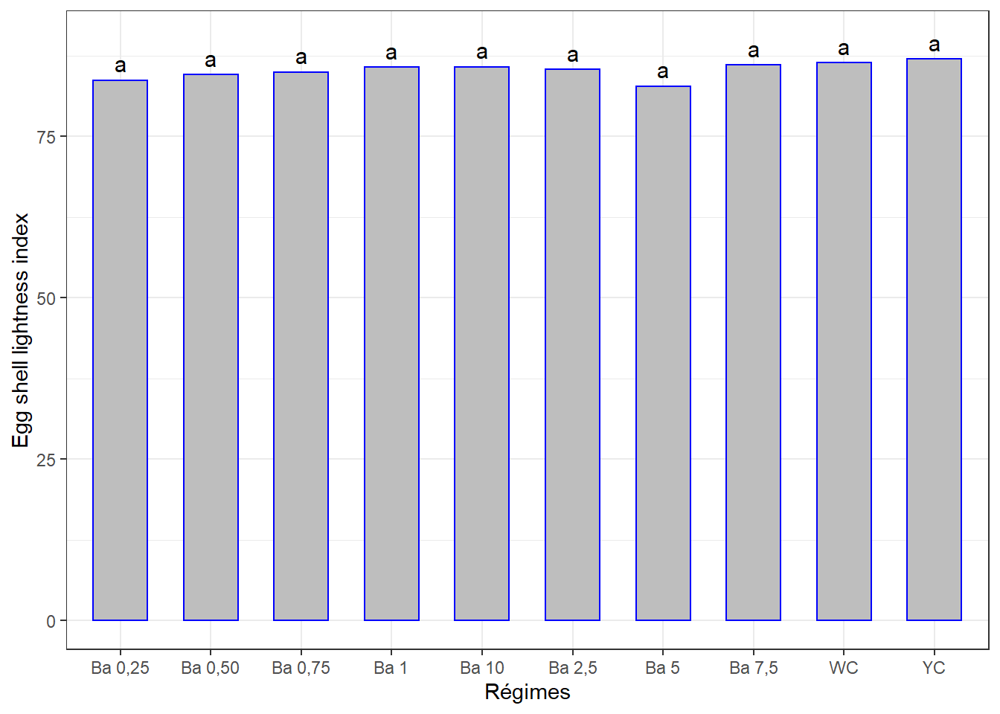
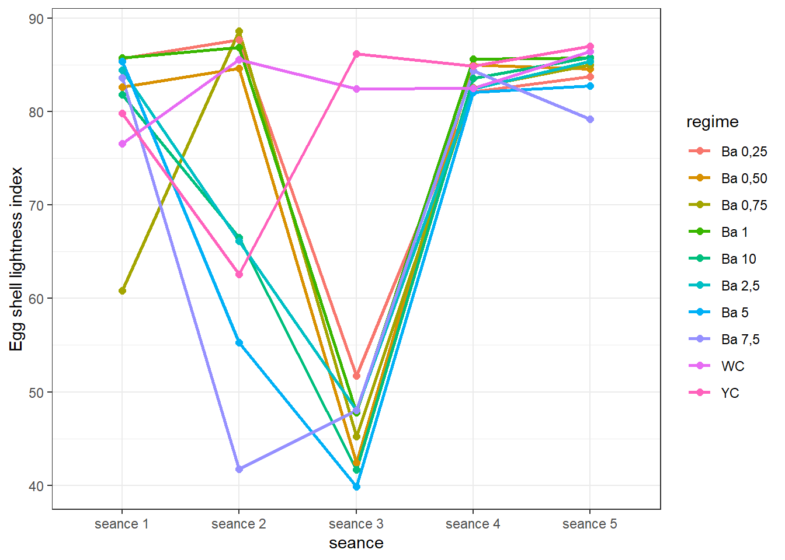
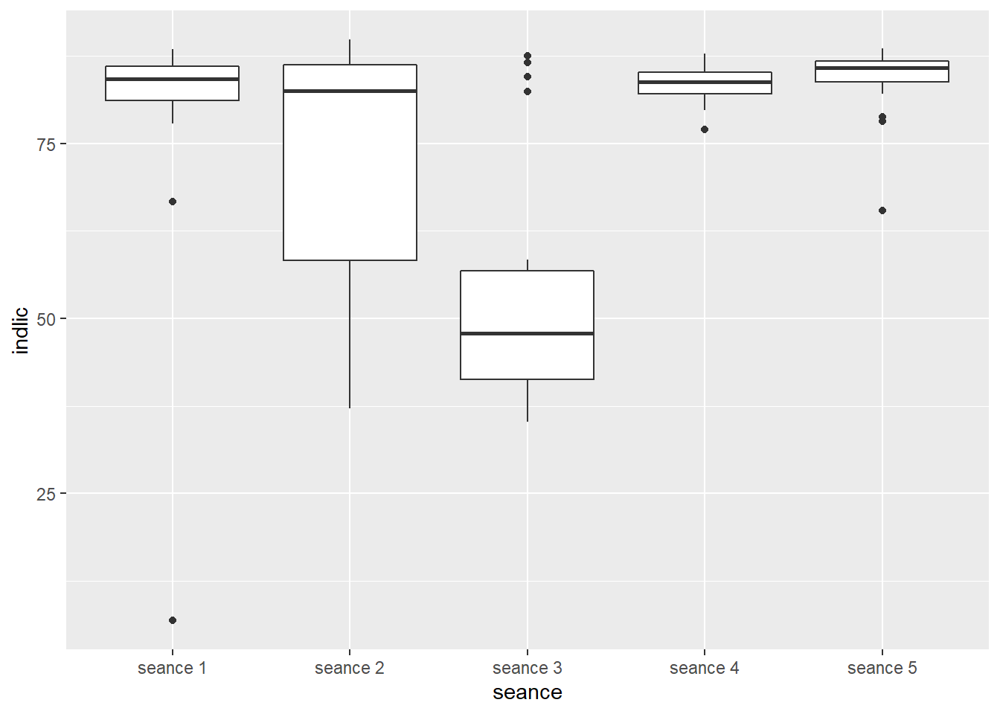

Chapitre 9 Indice L de l’intérieur de la coquille
La démarche sera la même que celle des chapitres précédents. Il se peut qu’il y ait moins de commentaires.
Même jeu de données oeuf.csv qui contient différentes mesures dont l’ évaluation de la couleur de l’intérieur de la coquille (Ligthness index) - indice L , mesurée en 5 séances. Mêmes traitements (régimes).
La question est de savoir si les différents régimes induisent des indices de luminosité à l’intérieur de la coquille d’oeuf significativement différents avec le temps.
Mais chaque traitement n’ayant pas été appliqué sur tous les groupes d’oiseaux, l’ANOVA à mesures répétées ne pourrait pas être appliquée. Nous comparerons les effets des traitements séance par séance, puis à l’aide d’une figure on appréciera s’il y a une évolution de cet indice en fonction du temps.
9.1 Les données
lic <- read_csv("data/oeuf.csv")
lic <- lic %>%
select(seance, regime, no_oeuf, indlic) %>%
mutate(id = rep(1:30, 5), .before = 1) %>%
convert_as_factor(id, seance, regime)Le tableau a été préalablement structuré en format long en Excel. J’ai ajouté un identifiant (id) pour les échantillons des séances.
## Rows: 150
## Columns: 5
## $ id <fct> 1, 2, 3, 4, 5, 6, 7, 8, 9, 10, 11, 12, 13, 14, 15, 16, 17, 18,~
## $ seance <fct> seance 1, seance 1, seance 1, seance 1, seance 1, seance 1, se~
## $ regime <fct> "Ba 0,25", "Ba 0,25", "Ba 0,25", "Ba 0,50", "Ba 0,50", "Ba 0,5~
## $ no_oeuf <dbl> 1, 2, 3, 1, 2, 3, 1, 2, 3, 1, 2, 3, 1, 2, 3, 1, 2, 3, 1, 2, 3,~
## $ indlic <dbl> 85.990, 85.160, 85.920, 86.950, 82.220, 78.700, 88.450, 87.170~9.2 Visualisation boxplots
bxp <- ggplot(lic, aes(x = regime, y = indlic, fill = regime)) +
geom_boxplot() +
facet_grid(seance ~ .) +
theme(axis.text.x = element_text(angle = 90, color = "black", vjust = 0.5, hjust = 1)) +
ylab("Shell lightness index") +
theme_bw()
bxp
=> Variations notables entre les traitements pour certaines séances.
9.3 Détection des valeurs aberrantes extrêmes
## [1] seance regime id no_oeuf indlic is.outlier is.extreme
## <0 rows> (or 0-length row.names)=> Pas de valeurs aberrantes extrêmes pour toutes les séances.
9.4 Conditions de l’ANOVA
9.4.1 Normalité
Si les données sont normalement distribuées, la p-value de Shapiro-Wilk doit être supérieure à 0,05 pour chaque régime.
## # A tibble: 5 x 4
## seance variable statistic p
## <fct> <chr> <dbl> <dbl>
## 1 seance 1 indlic 0.415 7.46e-10
## 2 seance 2 indlic 0.809 9.78e- 5
## 3 seance 3 indlic 0.792 4.66e- 5
## 4 seance 4 indlic 0.971 5.75e- 1
## 5 seance 5 indlic 0.689 1.09e- 6=> Normalité seulement pour la séance 4.
Créer des QQ-plots pour chaque point par séance

On explorera les données séances par séance pour palier au problème de normalité.
9.4.2 Homogénéité des variances
## # A tibble: 5 x 5
## seance df1 df2 statistic p
## <fct> <int> <int> <dbl> <dbl>
## 1 seance 1 9 20 0.911 0.535
## 2 seance 2 9 20 1.00 0.471
## 3 seance 3 9 20 1.95 0.103
## 4 seance 4 9 20 0.876 0.562
## 5 seance 5 9 20 1.15 0.376=> Toutes les valeurs p sont > 0.05 => toutes les variances sont homogènes.
9.5 ANOVA à 1 facteur séance par séance
9.5.1 Séance 1
## # A tibble: 2 x 7
## id seance regime no_oeuf indlic is.outlier is.extreme
## <fct> <fct> <fct> <dbl> <dbl> <lgl> <lgl>
## 1 9 seance 1 Ba 0,75 3 6.84 TRUE TRUE
## 2 29 seance 1 WC 2 66.7 TRUE FALSE=> 1 observation extrême.
9.5.1.1 Le modèle
## Anova Table (Type II tests)
##
## Response: indlic
## Sum Sq Df F value Pr(>F)
## regime 273.04 9 2.0205 0.09426 .
## Residuals 285.28 19
## ---
## Signif. codes: 0 '***' 0.001 '**' 0.01 '*' 0.05 '.' 0.1 ' ' 1La p-value > 0.05 => Pas de différence significative entre les effets des régimes sur cet indice à la séance 1.
## # A tibble: 1 x 3
## variable statistic p.value
## <chr> <dbl> <dbl>
## 1 residuals(lm1) 0.936 0.0809=> Normalité Okay !
9.5.1.2 Comparaisons par paires
Comparaisons des moyennes par paires, Student - Newman - Keuls.
cm1 <- (SNK.test(lm1, "regime", group = TRUE))$groups %>%
mutate(regime = rownames(.)) %>%
select(regime, indlic, groups) %>%
as_tibble()
cm1## # A tibble: 10 x 3
## regime indlic groups
## <chr> <dbl> <chr>
## 1 Ba 0,75 87.8 a
## 2 Ba 1 85.7 a
## 3 Ba 0,25 85.7 a
## 4 Ba 5 85.3 a
## 5 Ba 2,5 84.4 a
## 6 Ba 7,5 83.6 a
## 7 Ba 0,50 82.6 a
## 8 Ba 10 81.8 a
## 9 YC 79.8 a
## 10 WC 76.6 a9.5.1.3 Visualisation des groupes, bareplots avec labels
ggplot(data = cm1, mapping = aes(x = regime, y = indlic)) +
geom_bar(stat = "identity", color = "blue", fill = "grey", width = 0.6) +
geom_text(aes(label = groups), vjust = -0.5, size = 4) +
#ylim(0, 90) +
xlab("Régimes") + ylab("Egg shell lightness index") +
theme(axis.text.x = element_text(angle = 45, color = "black", vjust = 1, hjust = 1)) +
theme_bw()
9.5.2 Séance 2
9.5.2.1 Le modèle
## [1] id seance regime no_oeuf indlic is.outlier is.extreme
## <0 rows> (or 0-length row.names)=> Pas d’observation supossée extrême
## Anova Table (Type II tests)
##
## Response: indlic
## Sum Sq Df F value Pr(>F)
## regime 7288.0 9 7.5532 8.99e-05 ***
## Residuals 2144.2 20
## ---
## Signif. codes: 0 '***' 0.001 '**' 0.01 '*' 0.05 '.' 0.1 ' ' 1La p-value est < 0.01 => Différence très significative entre les effets d’au moins 2 régimes.
## # A tibble: 1 x 3
## variable statistic p.value
## <chr> <dbl> <dbl>
## 1 residuals(lm2) 0.910 0.0148=> Alternative non paramétrique.
## # A tibble: 1 x 6
## .y. n statistic df p method
## * <chr> <int> <dbl> <int> <dbl> <chr>
## 1 indlic 30 24.5 9 0.00355 Kruskal-Wallis=> Différence très significative entre les effets d’au moins 2 régimes.
9.5.2.2 Comparaisons par paires
Test de Dunn
lic2 %>%
dunn_test(indlic ~ regime, p.adjust.method = "bonferroni") %>%
select(group1, group2, p, p.adj, p.adj.signif) %>%
filter(p.adj.signif != "ns")## # A tibble: 1 x 5
## group1 group2 p p.adj p.adj.signif
## <chr> <chr> <dbl> <dbl> <chr>
## 1 Ba 0,75 Ba 7,5 0.000711 0.0320 *=> Différence au niveau des effets de ces deux régimes.
Calcul des moyennes ci-dessous, pour le classement manuel (identifier les groupes). Le graphique automatique un peu complexe !
cm2 <- lic2 %>%
select(regime, indlic) %>%
group_by(regime) %>%
summarise_all(list(lic_moyen = mean, sd = sd)) %>%
data.table::setorder(-lic_moyen)
cm2## # A tibble: 10 x 3
## regime lic_moyen sd
## * <fct> <dbl> <dbl>
## 1 Ba 0,75 88.6 0.415
## 2 Ba 0,25 87.7 1.91
## 3 Ba 1 86.9 1.67
## 4 WC 85.6 2.67
## 5 Ba 0,50 84.6 2.06
## 6 Ba 10 66.5 20.8
## 7 Ba 2,5 66.1 12.1
## 8 YC 62.6 6.55
## 9 Ba 5 55.3 20.3
## 10 Ba 7,5 41.8 4.45J’ajoute les lettres à la main :
## # A tibble: 10 x 4
## regime lic_moyen sd groups
## * <fct> <dbl> <dbl> <chr>
## 1 Ba 0,75 88.6 0.415 a
## 2 Ba 0,25 87.7 1.91 ab
## 3 Ba 1 86.9 1.67 ab
## 4 WC 85.6 2.67 ab
## 5 Ba 0,50 84.6 2.06 ab
## 6 Ba 10 66.5 20.8 ab
## 7 Ba 2,5 66.1 12.1 ab
## 8 YC 62.6 6.55 ab
## 9 Ba 5 55.3 20.3 ab
## 10 Ba 7,5 41.8 4.45 b9.5.2.3 Visualisation des groupes
ggplot(data = cm2, mapping = aes(x = regime, y = lic_moyen)) +
geom_bar(stat = "identity", color = "blue", fill = "grey", width = 0.6) +
ylim(0, 90) +
geom_text(aes(label = groups), vjust = -0.5, size = 4) +
xlab("Régimes") + ylab("Egg shell lightness index") +
theme(axis.text.x = element_text(angle = 45, color = "black", vjust = 1, hjust = 1)) +
theme_bw()
9.5.3 Séance 3
## # A tibble: 6 x 7
## id seance regime no_oeuf indlic is.outlier is.extreme
## <fct> <fct> <fct> <dbl> <dbl> <lgl> <lgl>
## 1 25 seance 3 YC 1 87.5 TRUE FALSE
## 2 26 seance 3 YC 2 84.5 TRUE FALSE
## 3 27 seance 3 YC 3 86.6 TRUE FALSE
## 4 28 seance 3 WC 1 82.4 TRUE FALSE
## 5 29 seance 3 WC 2 82.4 TRUE FALSE
## 6 30 seance 3 WC 3 82.4 TRUE FALSE=> Le mais jaune (YC) et le mais blanc (WC) sont identifiés comme observations aberrantes mais pas extrême.
9.5.3.1 Le modèle
## Anova Table (Type II tests)
##
## Response: indlic
## Sum Sq Df F value Pr(>F)
## regime 7549.9 9 26.893 2.854e-09 ***
## Residuals 623.8 20
## ---
## Signif. codes: 0 '***' 0.001 '**' 0.01 '*' 0.05 '.' 0.1 ' ' 1La p-value < 0.01 => Différence très significative entre les effets d’au moins 2 régimes.
## # A tibble: 1 x 3
## variable statistic p.value
## <chr> <dbl> <dbl>
## 1 residuals(lm3) 0.859 0.000956=> Normalité pas satisfaite.
Les transformations log() ou Boxcox ne résolvent également pas ce problàme.
=> Alternative non paramétrique
## # A tibble: 1 x 6
## .y. n statistic df p method
## * <chr> <int> <dbl> <int> <dbl> <chr>
## 1 indlic 30 19.3 9 0.0227 Kruskal-Wallis=> Différence significative entre les effetes d’au moins 2 régimes. En comparant 2 à 2 les régimes avec ce cette alternative :
9.5.3.2 Comparaisons par paires
Test de Dunn
lic3 %>%
dunn_test(indlic ~ regime, p.adjust.method = "bonferroni") %>%
select(group1, group2, p, p.adj, p.adj.signif) %>%
filter(p.adj.signif != "ns")## # A tibble: 0 x 5
## # ... with 5 variables: group1 <chr>, group2 <chr>, p <dbl>, p.adj <dbl>,
## # p.adj.signif <chr>Test Wilcoxon
lic3 %>%
rstatix::wilcox_test(indlic ~ regime, p.adjust.method = "bonferroni", paired = TRUE) %>%
select(group1, group2, p, p.adj, p.adj.signif) %>%
filter(p.adj.signif != "ns")## # A tibble: 0 x 5
## # ... with 5 variables: group1 <chr>, group2 <chr>, p <dbl>, p.adj <dbl>,
## # p.adj.signif <chr>=> Pas de paires différentes détectées… ni avec Dunn, ni avec Wilcoxon.
Si on supposait que les conditions de l’ANOVA étaient respectées, la comparaison par paires donnerait ceci :
cm3 <- (SNK.test(lm3, "regime", group = TRUE))$groups %>%
mutate(regime = rownames(.)) %>%
select(regime, indlic, groups) %>%
as_tibble()
cm3## # A tibble: 10 x 3
## regime indlic groups
## <chr> <dbl> <chr>
## 1 YC 86.2 a
## 2 WC 82.4 a
## 3 Ba 0,25 51.7 b
## 4 Ba 2,5 48.1 b
## 5 Ba 7,5 48.0 b
## 6 Ba 1 47.8 b
## 7 Ba 0,75 45.2 b
## 8 Ba 0,50 42.4 b
## 9 Ba 10 41.7 b
## 10 Ba 5 39.8 b… Et la visualisation graphique :
ggplot(data = cm3, mapping = aes(x = regime, y = indlic)) +
geom_bar(stat = "identity", color = "blue", fill = "grey", width = 0.6) +
geom_text(aes(label = groups), vjust = -0.5, size = 4) +
ylim(0, 90) +
xlab("Régimes") + ylab("Egg shell lightness index") +
theme(axis.text.x = element_text(angle = 45, color = "black", vjust = 1, hjust = 1)) +
theme_bw()
Les deux groupes sont presqu’évidents, mais les conditions de l’ANOVA ne nous permettent pas de valider cette interprétation. …
9.5.4 Séance 4
9.5.4.1 Le modèle
## Anova Table (Type II tests)
##
## Response: indlic
## Sum Sq Df F value Pr(>F)
## regime 49.48 9 0.9333 0.5185
## Residuals 117.81 20La p-value > 0.05 => Pas de différence significative entre les effets des régimes.
9.5.4.2 Comparaisons par paires
cm4 <- (SNK.test(lm4, "regime", group = TRUE))$groups %>%
mutate(regime = rownames(.)) %>%
select(regime, indlic, groups) %>%
as_tibble()
cm4## # A tibble: 10 x 3
## regime indlic groups
## <chr> <dbl> <chr>
## 1 Ba 1 85.6 a
## 2 Ba 0,50 85.0 a
## 3 YC 84.9 a
## 4 Ba 7,5 84.4 a
## 5 Ba 10 83.6 a
## 6 Ba 0,75 82.5 a
## 7 WC 82.5 a
## 8 Ba 2,5 82.4 a
## 9 Ba 0,25 82.1 a
## 10 Ba 5 82.1 a9.5.4.3 Visualisation des groupes
ggplot(data = cm4, mapping = aes(x = regime, y = indlic)) +
geom_bar(stat = "identity", color = "blue", fill = "grey", width = 0.6) +
ylim(0, 90) +
geom_text(aes(label = groups), vjust = -0.5, size = 4) +
xlab("Régimes") + ylab("Egg shell lightness index") +
theme(axis.text.x = element_text(angle = 45, color = "black", vjust = 1, hjust = 1)) +
theme_bw()
9.5.5 Séance 5
## # A tibble: 3 x 7
## id seance regime no_oeuf indlic is.outlier is.extreme
## <fct> <fct> <fct> <dbl> <dbl> <lgl> <lgl>
## 1 1 seance 5 Ba 0,25 1 78.8 TRUE FALSE
## 2 18 seance 5 Ba 5 3 78.2 TRUE FALSE
## 3 21 seance 5 Ba 7,5 3 65.4 TRUE TRUE9.5.5.1 Le modèle
## Anova Table (Type II tests)
##
## Response: indlic
## Sum Sq Df F value Pr(>F)
## regime 43.535 9 0.6293 0.7585
## Residuals 146.057 19La p-value est > 0.05 => Pas de différence significative entre les effetes des régimes.
## # A tibble: 1 x 3
## variable statistic p.value
## <chr> <dbl> <dbl>
## 1 residuals(lm5) 0.974 0.660=> Normalité Okay après l’exclusion de l’observation extrême. On poursuivra avec ce modèle.
9.5.5.2 Comparaisons par paires
cm5 <- (SNK.test(lm5, "regime", group = TRUE))$groups %>%
mutate(regime = rownames(.)) %>%
select(regime, indlic, groups) %>%
as_tibble()
cm5## # A tibble: 10 x 3
## regime indlic groups
## <chr> <dbl> <chr>
## 1 YC 87.0 a
## 2 WC 86.4 a
## 3 Ba 7,5 86.1 a
## 4 Ba 10 85.8 a
## 5 Ba 1 85.7 a
## 6 Ba 2,5 85.4 a
## 7 Ba 0,75 85.0 a
## 8 Ba 0,50 84.6 a
## 9 Ba 0,25 83.7 a
## 10 Ba 5 82.8 a9.5.5.3 Visualisation
ggplot(data = cm5, mapping = aes(x = regime, y = indlic)) +
geom_bar(stat = "identity", color = "blue", fill = "grey", width = 0.6) +
ylim(0, 90) +
geom_text(aes(label = groups), vjust = -0.5, size = 4) +
xlab("Régimes") + ylab("Egg shell lightness index") +
theme(axis.text.x = element_text(angle = 45, color = "black", vjust = 1, hjust = 1)) +
theme_bw()
9.6 Évolution de l’indice L par régime au cours du temps
9.6.1 Sommaire
lic_ic <- summarySE(lic,
measurevar = "indlic",
groupvars = c("seance", "regime"),
na.rm = TRUE)
lic_ic## seance regime N indlic sd se ci
## 1 seance 1 Ba 0,25 3 85.69000 0.4603260 0.2657693 1.143513
## 2 seance 1 Ba 0,50 3 82.62333 4.1397625 2.3900930 10.283740
## 3 seance 1 Ba 0,75 3 60.81967 46.7530093 26.9928625 116.140914
## 4 seance 1 Ba 1 3 85.71333 3.6454401 2.1046958 9.055775
## 5 seance 1 Ba 10 3 81.80000 0.0000000 0.0000000 0.000000
## 6 seance 1 Ba 2,5 3 84.43333 3.0516444 1.7618677 7.580705
## 7 seance 1 Ba 5 3 85.34667 0.5727419 0.3306727 1.422770
## 8 seance 1 Ba 7,5 3 83.64000 3.4702594 2.0035552 8.620602
## 9 seance 1 WC 3 76.55333 8.9364497 5.1594616 22.199372
## 10 seance 1 YC 3 79.80333 3.1700841 1.8302489 7.874926
## 11 seance 2 Ba 0,25 3 87.68000 1.9098429 1.1026483 4.744313
## 12 seance 2 Ba 0,50 3 84.59333 2.0565586 1.1873547 5.108775
## 13 seance 2 Ba 0,75 3 88.59667 0.4152509 0.2397452 1.031540
## 14 seance 2 Ba 1 3 86.85667 1.6651226 0.9613590 4.136394
## 15 seance 2 Ba 10 3 66.49000 20.7885281 12.0022623 51.641567
## 16 seance 2 Ba 2,5 3 66.11667 12.1090971 6.9911905 30.080665
## 17 seance 2 Ba 5 3 55.27000 20.3153932 11.7290977 50.466234
## 18 seance 2 Ba 7,5 3 41.75333 4.4490036 2.5686334 11.051938
## 19 seance 2 WC 3 85.56000 2.6678268 1.5402705 6.627249
## 20 seance 2 YC 3 62.61000 6.5464265 3.7795811 16.262225
## 21 seance 3 Ba 0,25 3 51.74000 2.1800000 1.2586236 5.415420
## 22 seance 3 Ba 0,50 3 42.44000 7.9207828 4.5730661 19.676315
## 23 seance 3 Ba 0,75 3 45.21333 7.3150279 4.2233333 18.171537
## 24 seance 3 Ba 1 3 47.81667 9.7661473 5.6384878 24.260455
## 25 seance 3 Ba 10 3 41.67000 0.0000000 0.0000000 0.000000
## 26 seance 3 Ba 2,5 3 48.06000 0.7800000 0.4503332 1.937627
## 27 seance 3 Ba 5 3 39.84000 0.9500000 0.5484828 2.359931
## 28 seance 3 Ba 7,5 3 48.03000 9.5769097 5.5292314 23.790363
## 29 seance 3 WC 3 82.41000 0.0000000 0.0000000 0.000000
## 30 seance 3 YC 3 86.19000 1.5222680 0.8788819 3.781523
## 31 seance 4 Ba 0,25 3 82.08667 1.3764205 0.7946767 3.419218
## 32 seance 4 Ba 0,50 3 84.99333 1.2495733 0.7214415 3.104112
## 33 seance 4 Ba 0,75 3 82.54000 5.4086690 3.1226965 13.435879
## 34 seance 4 Ba 1 3 85.58667 1.5824770 0.9136435 3.931091
## 35 seance 4 Ba 10 3 83.56667 2.6652642 1.5387910 6.620883
## 36 seance 4 Ba 2,5 3 82.40667 2.1335729 1.2318189 5.300089
## 37 seance 4 Ba 5 3 82.07000 0.0000000 0.0000000 0.000000
## 38 seance 4 Ba 7,5 3 84.39333 2.3347020 1.3479408 5.799721
## 39 seance 4 WC 3 82.48333 2.4133448 1.3933453 5.995081
## 40 seance 4 YC 3 84.88333 0.8715695 0.5032009 2.165099
## 41 seance 5 Ba 0,25 3 83.73000 4.2383015 2.4469845 10.528525
## 42 seance 5 Ba 0,50 3 84.56000 2.0804807 1.2011661 5.168201
## 43 seance 5 Ba 0,75 3 84.99667 3.1848757 1.8387889 7.911670
## 44 seance 5 Ba 1 3 85.74333 3.1357987 1.8104542 7.789756
## 45 seance 5 Ba 10 3 85.78000 0.0000000 0.0000000 0.000000
## 46 seance 5 Ba 2,5 3 85.37667 0.8723149 0.5036313 2.166950
## 47 seance 5 Ba 5 3 82.76333 4.9564134 2.8615866 12.312413
## 48 seance 5 Ba 7,5 3 79.20667 12.1123339 6.9930593 30.088706
## 49 seance 5 WC 3 86.42667 0.5575243 0.3218868 1.384967
## 50 seance 5 YC 3 87.01000 0.5900000 0.3406367 1.4656419.6.2 Visualisation
ggplot(lic_ic, aes(x = seance, y = indlic, colour = regime, group = regime)) +
geom_line(size = 1) +
geom_point(size = 2) +
ylab("Egg shell lightness index") +
theme_bw()
Il ne semble pas se dégager une tendance concrète entre les différentes séances, ou difficile à exploiter. Vous jugerez. En séance 2 on voit bien que 2 groupes se distinguent, mais les conditions de l’ANOVA ne sont pas valides et les méthodes non paramétriques ne parviennent pas à distinguer des groupes.
Nous savons par les analyses pour chaque séance plus haut, que
- séance 1 : pas de différences signicatives d’effet entre les régimes
- séance 2 : il existe des différences d’effet entre les régimes
- séance 3 : données difficiles à exploiter … et exclure des observation exclue 2 régimes de l’analyse !
- séance 4 : pas de différences signicatives d’effet entre les régimes
- séance 5 : pas de différences signicatives d’effet entre les régimes
Puisque les données ne répondent pas aux conditions pour évaluer les effets des régimes au cours du temps, on négligera l’effet des régimes pour évaluer globalement l’effet du temps sur cet indice.
On pourrait se demander si les indices L mesurés sur l’ensemble des sujets sont significativement différentes d’une séance à l’autre (c’est-à-dire avec le temps).
9.6.3 Effet du temps
9.6.3.1 boxplots, facteur temps

9.6.3.2 Valeurs aberrantes, facteur temps
lic <- lic %>% mutate(id2 = 1:nrow(.), .before = 1)
lic_out <- lic %>%
group_by(seance) %>%
identify_outliers(indlic)
lic_out## # A tibble: 12 x 8
## seance id2 id regime no_oeuf indlic is.outlier is.extreme
## <fct> <int> <fct> <fct> <dbl> <dbl> <lgl> <lgl>
## 1 seance 1 9 9 Ba 0,75 3 6.84 TRUE TRUE
## 2 seance 1 29 29 WC 2 66.7 TRUE FALSE
## 3 seance 3 85 25 YC 1 87.5 TRUE FALSE
## 4 seance 3 86 26 YC 2 84.5 TRUE FALSE
## 5 seance 3 87 27 YC 3 86.6 TRUE FALSE
## 6 seance 3 88 28 WC 1 82.4 TRUE FALSE
## 7 seance 3 89 29 WC 2 82.4 TRUE FALSE
## 8 seance 3 90 30 WC 3 82.4 TRUE FALSE
## 9 seance 4 97 7 Ba 0,75 1 77.0 TRUE FALSE
## 10 seance 5 121 1 Ba 0,25 1 78.8 TRUE FALSE
## 11 seance 5 138 18 Ba 5 3 78.2 TRUE FALSE
## 12 seance 5 141 21 Ba 7,5 3 65.4 TRUE TRUE=> 1 observation aberrante extrême pour la séance 1. On pourrait les exclure. Mais je les ai conservé pour la suite.
9.6.3.3 Homogénéité des variances et ANOVA, facteur temps
Les autres conditions ont déjà été vérifiées.
## ANOVA Table (type III tests)
##
## Effect DFn DFd F p p<.05 ges
## 1 seance 2.6 75.51 29.521 8.46e-12 * 0.451=> C’est la p-value qui nous intéresse et elle est < 0.05 => Différence significative entre certaines séances.
9.6.3.4 Comparaisons par paires, facteur temps
tph <- lic %>%
pairwise_t_test(indlic ~ seance,
paired = TRUE,
p.adjust.method = "bonferroni")
tph %>%
select(group1, group2, p, p.adj, p.adj.signif)## # A tibble: 10 x 5
## group1 group2 p p.adj p.adj.signif
## <chr> <chr> <dbl> <dbl> <chr>
## 1 seance 1 seance 2 8.5 e- 2 8.53e- 1 ns
## 2 seance 1 seance 3 4.87e- 7 4.87e- 6 ****
## 3 seance 1 seance 4 3 e- 1 1 e+ 0 ns
## 4 seance 1 seance 5 1.99e- 1 1 e+ 0 ns
## 5 seance 2 seance 3 1.3 e- 4 1 e- 3 **
## 6 seance 2 seance 4 3 e- 3 3.1 e- 2 *
## 7 seance 2 seance 5 5.51e- 4 6 e- 3 **
## 8 seance 3 seance 4 6.94e-11 6.94e-10 ****
## 9 seance 3 seance 5 1.87e-11 1.87e-10 ****
## 10 seance 4 seance 5 2.55e- 1 1 e+ 0 ns